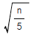

지적기능사 (2002-01-27 기출문제)
1과목: 지적일반(임의구분)
1. 다음 중 지적의 등록객체가 아닌 것은?
- 울릉도
- 한강
- 동해
- 설악산
(정답률: 64%)

2. 소관청은 1필지의 소유자가 몇 인 이상일 때 공유지연명부를 비치하는가?
- 2인
- 3인
- 4인
- 5인
(정답률: 95%)
3. 토지의 등록제도가 개인에게 주는 이점과 가장 거리가 먼것은?
- 토지 소유권의 안정성이 증대된다.
- 토지 거래에 있어서 경비 절감을 할 수 있다.
- 토지에 대한 투자의욕이 생겨 재산증식의 수단이 된다.
- 토지 분쟁의 해결을 위한 소송사건이 증대된다.
(정답률: 54%)
4. 토지를 신규등록하는 경우 면적의 결정은 누가 하는가?
- 토지 소유자
- 대행 측량사
- 해당 지적직 공무원
- 소관청
(정답률: 93%)
5. 필지 합병시 지번부여의 원칙은?
- 합병전 지번 중 최초 지번으로 한다.
- 합병전 지번 중 최종 지번으로 한다.
- 합병전 최초지번에 부번을 부여한다.
- 합병전 최종지번에 부번을 부여한다.
(정답률: 56%)
6. 다음 중 수치지적부의 등록사항이 아닌 것은?
- 지번
- 좌표
- 부호도
- 면적
(정답률: 35%)
7. 다음 중 필지의 뜻을 가장 옳게 표현한 것은?
- 1인의 소유토지
- 고저차가 없는 토지
- 1개의 지번의 붙은 토지
- 경작자 단위로 구획된 토지
(정답률: 73%)
8. 다음 중 토지대장의 등록순서는?
- 지목별로 차례로 등록한다.
- 소유자의 성명에 따라 가나다 순으로 등록한다.
- 지역, 지번의 순으로 등록한다.
- 과세 등급순위대로 등록한다.
(정답률: 74%)
9. 다음 중 지번으로 알 수 있는 사항은?
- 토지의 위치
- 토지의 면적
- 토지의 개발현황
- 토지의 이용현황
(정답률: 66%)
10. 경계에 대한 설명으로 적합하지 않은 것은?
- 위치가 있다.
- 면적이 있다.
- 필지간 공통이다.
- 지적도에 등록되어야 한다.
(정답률: 53%)
11. 표준길이보다 5cm가 긴 50m 줄자로 거리를 측정한 결과 500m였다. 이 거리의 정확한 값은?
- 495.0m
- 499.5m
- 500.5m
- 5⑤.0m
(정답률: 69%)
12. 지적측량의 내용 중 기초측량의 종류에 해당되지 않는 것은?
- 지적삼각측량
- 지적삼각보조측량
- 이동측량
- 도근측량
(정답률: 81%)
13. 토지가 해면 또는 수면에 접해 있을 때 토지경계 측정점으로 결정하는 선은?
- 최대만수위
- 평균수위
- 최저만수위
- 최저수위
(정답률: 85%)
14. 다음 중 도근측량에서의 계산방법이 아닌 것은?
- 도선법
- 방향법
- 교회법
- 다각망도선법
(정답률: 41%)
15. 앨리데이드의 경사분획 한 눈금의 크기는 양시준판 간격의 얼마에 해당하는가?
- 1/300
- 1/200
- 1/100
- 1/50
(정답률: 59%)
16. 측판측량을 도선법으로 실시할 때의 설명이다. 잘못된 사항은?
- 명확한 기지점간을 상호 연결한다.
- 도선의 측선장은 도상 8센티미터 이하로 한다.
- 도선의 변수는 20변 이하로 한다.
- 도선의 폐색오차가 도상의 길이

밀리미터 이하일 때 배부한다.
(정답률: 42%)
17. 축척 1/1000 지역에서 측판측량을 할 때 도상에 영향을 미치지 않는 지상거리는?
- 5 cm
- 10 cm
- 12 cm
- 24 cm
(정답률: 57%)
18. 미지점에 측판을 세우고 기지점을 시준한 방향선에 의하여 그 위치를 측정하는 방법은?
- 전방교회법
- 후방교회법
- 측방교회법
- 원호교회법
(정답률: 67%)
19. 측판측량을 후방교회법에 의할 경우 측판의 위치를 결정하는 방법으로 사용하지 않는 것은?
- 레만법
- 1점 문제법
- 베셀법
- 투사지 사용법
(정답률: 40%)
20. 다각망도선법에 의한 지적삼각보조점의 관측과 계산에서 도선별 평균방위각과 관측방위각의 폐색오차는? (단, n은 폐색변을 포함한 변수)
- ± 0.5√n 초 이내
- ± 5√n 초 이내
- ± 10√n 초 이내
- ± 20√n 초 이내
(정답률: 36%)
2과목: 지적측량(임의구분)
21. 도근점의 각도 관측에서 배각법에 의할 때 1배각과 3배각의 평균값에 대한 교차는?
- 10초 이내
- 20초 이내
- 30초 이내
- 40초 이내
(정답률: 58%)
22. 교회법에 의한 지점삼각 보조점의 수평각 관측은?
- 2대회의 배각관측법으로 한다.
- 3대회의 배각관측법으로 한다.
- 2대회의 방향관측법으로 한다.
- 3대회의 방향관측법으로 한다.
(정답률: 36%)
23. 측판측량방법에 의한 세부측량을 교회법으로 할 때 방향각의 교각은?
- 30° 이상 120° 이하
- 30° 이상 90° 이하
- 90° 이상 150° 이하
- 30° 이상 150° 이하
(정답률: 31%)
24. 다음 중 도면의 재작성 방법이 아닌 것은?
- 직접자사법
- 간접자사법
- 정밀복사법
- 간접복사법
(정답률: 71%)
25. 배각법에 의한 도근측량에서 변수가 16변인 2등 도선의 허용오차는?
- ± 90초
- ± 100초
- ± 110초
- ± 120초
(정답률: 46%)
26. 지적법에서 소관청이라 함은?
- 행정자치부 장관
- 면장
- 시장,군수,구청장
- 도지사
(정답률: 76%)
27. 1910년 토지조사사업 당시 소유자와 경계를 심사하여 확정한 처분을 무엇이라 하는가?
- 토지조사
- 사정
- 재결
- 부본
(정답률: 68%)
28. 다음 중 지적기능자의 직무범위에 해당하지 않는 것은?
- 지적측량 업무의 집행
- 지적도나 임야도의 정리
- 지적도나 임야도의 등사
- 면적측정
(정답률: 37%)
29. 지적도를 2매 이상 접합해야 하는 경우 가장 우선적인 기준이 되는 것은?
- 행정구역 경계선
- 도곽선
- 도로 경계선
- 하천 경계선
(정답률: 58%)
30. 지적도 도곽선은 원점으로 부터 기산하여 종선에 50만미터를 가산하였다면 횡선에는 얼마를 가산하는가?
- 10만 미터
- 20만 미터
- 30만 미터
- 50만 미터
(정답률: 66%)
31. 지적공부의 등록사항 중 토지 표시사항이 아닌 것은?
- 토지소재
- 지번
- 면적
- 고유번호
(정답률: 45%)
32. 지적측량업무를 대행하게 할 수 있는 비영리법인의 요건에 적합하지 않는 것은?
- 자산규모가 5억원 이상일 것
- 사단법인일 것
- 300인 이상의 지적기술자를 고용할 것
- 전체 시, 군, 구의 2/3이상에 출장소를 두고 있을 것
(정답률: 43%)
33. 지적공부에 등록된 1필지를 2필지 이상으로 나누어 등록하는 것을 무엇이라 하는가?
- 분할
- 등록전환
- 합병
- 토지의 이동
(정답률: 80%)
34. 축척변경사업을 시행할 경우 토지소유자는 몇 일 이내에 현재 점유상태의 경계를 지상에 표시해야 하는가?
- 15일 이내
- 20일 이내
- 30일 이내
- 40일 이내
(정답률: 44%)
35. 소유권이 미치는 범위와 면적 등을 정하는 기준이 되는 것은?
- 필지
- 토지대장
- 경계
- 지목
(정답률: 40%)
36. 일필지의 소유자가 2인 이상일 때 작성하는 지적공부는?
- 공유지연명부
- 지적도
- 토지대장
- 지번색인표
(정답률: 83%)
37. 지번 25, 30, 35-1을 합병하는 경우 어느 지번을 합병된 토지의 지번으로 하는가?
- 25
- 30
- 35-1
- 35-2
(정답률: 57%)
38. 다음 중 임야도의 축척에 해당하는 것은?
- 1/500
- 1/1000
- 1/3000
- 1/5000
(정답률: 85%)
39. 토지의 신규등록시 필요한 서류가 아닌 것은?
- 신청서
- 측량성과도
- 등기부 등본
- 소유권에 관한 서류
(정답률: 28%)
40. 우리나라에서 사용하고 있는 지적도 축척의 종류는 몇가지인가?
- 4종
- 5종
- 6종
- 7종
(정답률: 61%)
3과목: 지적공부정리(임의구분)
41. 지적도의 도곽은 무엇으로 구획하는가?
- 평면직각 종횡선 좌표
- 구면좌표
- 극좌표식
- 지리적 위치
(정답률: 69%)
42. 지적도에 등록하는 지목의 표기부호가 아닌 것은?
- 학
- 체
- 종
- 지
(정답률: 57%)
43. 지적공부의 등록사항 중 경계나 면적 또는 위치 변경을 가져오는 경우 정정 신청은 누가 하는가?
- 소관청
- 지적공사
- 토지소유자
- 행정자치부
(정답률: 33%)
44. 다음 중 수치지적부의 등록사항이 아닌 것은?
- 토지의 소재
- 좌표
- 지번
- 축척
(정답률: 27%)
45. 다음 중 일람도에 등재하여야 할 사항이 아닌 것은?
- 도곽선 및 도곽선수치
- 제명 및 축척
- 등고선의 표시
- 지번설정지역의 경계 및 명칭
(정답률: 49%)
46. 다음의 지적도 제도사항 중 흑색을 사용하지 않는 것은?
- 문자
- 기호
- 경계
- 말소선
(정답률: 64%)
47. 다음 중 도근점의 번호에 사용되는 문자는?
- 아라비아 숫자
- 로마 숫자
- 영문자
- 한문자
(정답률: 86%)
48. 다음 중 행정구역 경계의 동,리계에 대한 제도방법으로 옳은 것은?
- 실선 3mm와 허선 2mm로 연결하고 허선에 0.3mm의 점 1개를 그린다.
- 실선 3mm와 허선 1mm로 연결하여 그린다.
- 실선과 허선을 각각 3mm로 연결하고 허선에 0.3mm의 점 1개를 그린다.
- 실선 3mm와 허선 2mm로 연결하여 그린다.
(정답률: 49%)
49. 지적도, 임야도의 작성.정리시 경계선의 제도상 폭은?
- 0.4 mm
- 0.3 mm
- 0.2 mm
- 0.1 mm
(정답률: 53%)
50. 면적측정의 방법에서 현장에 사용되는 현지법으로 볼 수 없는 것은?
- 삼사법
- 삼변법
- 지거법
- 광량법
(정답률: 64%)
51. 지적도 도곽에서 종선의 북쪽의 기준은?
- 진북
- 자북
- 도북
- 극북
(정답률: 39%)
52. 축척 1/1200 지적도상에 1변이 2cm로 등록된 정4각형 토지의 실제면적은?
- 144m2
- 288m2
- 480m2
- 576m2
(정답률: 50%)
53. 일람도의 축척은 당해 도면축척의 얼마로 하는 것이 원칙인가?
- 1/5
- 1/10
- 1/20
- 1/40
(정답률: 77%)
54. 보조 삼각측량에 있어 두개의 삼각형으로부터 산출된 좌표가 종선차 9cm, 횡선차 7cm인 경우 연결오차는?
- 11.4 cm
- 16.2 cm
- 8.6 cm
- 9.0 cm
(정답률: 44%)
55. 전자면적계로 면적 측정시 도상 측정횟수는?
- 1회
- 2회
- 3회
- 4회
(정답률: 78%)
56. 도면을 철하지 않았을 때 A2용지의 윤곽선은 도면의 테두리에서 몇 mm 띄워야 하는가?
- 5
- 10
- 25
- 30
(정답률: 58%)
57. 다음의 설명 중 옳지 않은 것은?
- 분할하는 경우 분할전 지번 및 지목을 말소하고 분할 경계를 제도한 후 필지 지번만을 새로이 제도한다.
- 도곽선에 걸쳐있는 필지가 분할되어 도곽선 밖에 분할 경계가 제도된 경우에는 도곽선 밖에 제도된 필지의 경계를 말소하고 해당 도곽선 안에 경계, 지번 및 지목을 제도한다.
- 합병하는 경우 합병되는 필지 사이에 경계, 지번 및 지목을 말소한 후 존치될 지번 및 지목을 새로이 제도한다.
- 지목을 변경하는 경우에는 지목만 말소하고 그 상단에 새로이 설정된 지목을 제도한다.
(정답률: 28%)
58. 지적측량에 의하여 지적공부에 등록된 면적의 기준은?
- 토지의 경사면적
- 토지의 수평면적
- 토지의 평균해수면상면적
- 토지의 가상면적
(정답률: 85%)
59. 도해측량지역에서 면적이 축척분모의 50분의 1이하일 경우 면적측정방법으로 옳은 것은?
- 좌표면적계산법 또는 전자면적계법
- 전자면적계법 또는 삼사법
- 삼사법 또는 좌표면적계산법
- 좌표면적계산법 또는 푸라니미터법
(정답률: 14%)
60. 푸라니미터의 측도완 길이 검정시 눈금독수를 구하는 식으로 옳은 것은?
- 눈금독수 = 단위면적/원의면적
- 눈금독수 = 원의면적/단위면적
- 눈금독수 = 독수교차/단위면적
- 눈금독수 = 단위면적/독수교차
(정답률: 56%)